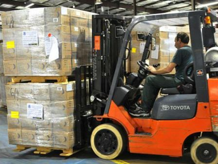

United States Army 2010-2017
I was a 91D which is power generation repair.
I also have a skill identifer C9 which involves patriotic missle systems and hydraulic functions.
Example of what a 91D does for the army Generator repair Hyrdaulic Patriotic Missle System C9
Warehouse Forklift driver/packer 2017-2019

Forklift Operator
Home Health Care 2019-2022
I work with people with physical and mental disabilities and help them live a normal & comfortable life.
Erie Homes For Children & Adults by far one of my favorite places I've had the pleasure to work